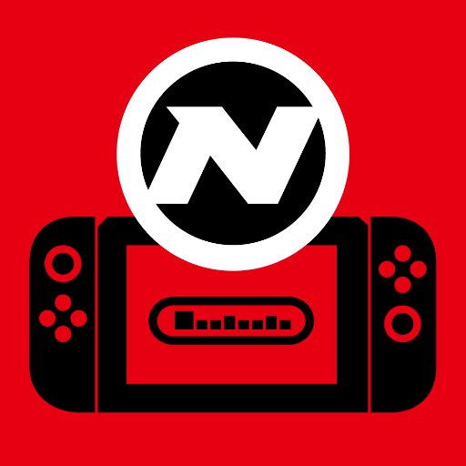

O livro "Guerra dos Consoles"(Console War)-
"Sega, Nintendo e a Batalha que Definiu Uma Geração", escrito por Blake J. Harris, conta mais a fundo sobre como
foi a briga de anos entre a SEGA e Nintendo, Genesis e Super Nintendo nos Estados Unidos para ser a maior
companhia de videogames local, tendo relatos de estratégias internas tanto da SEGA quanto da Nintendo de como
"combater o inimigo". O livro foi um sucesso e recebeu até um filme documentário.
Uma coisa que existe desde antes da internet se popularizar são as revistas
sobre videogames. Com o advento da internet elas acabaram perdendo popularidade e a maioria sumiu, mas agora
existem sites de notícias especializados no mercado de videogames, como a Game Blast, que trata de notícias
sobre jogos e empresas do ramo no geral, menos sobre assuntos relacionados à Nintendo, pois para tudo
relacionado à empresa o grupo tem um site próprio, o Nintendo Blast, ambos contando também com uma revista.

Logos da Game Blast e Nintendo Blast
Como dito, as revistas físicas sobre videogame foram se acabando, mas
projetos novos como a Warpzone ainda procuram manter a existência dessas revistas. A Warpzone é uma revista com
foco em vendas de sua versão física cujo assunto é retro-games, ou seja, jogos do passado das décadas de 80 e 90
e início dos anos 2000.
A Brasil Game Show é uma super feira anual de videogames e tecnologia que
ocorre no Brasil geralmente nos estados de São Paulo ou Rio de Janeiro. Nela são expostos jogos que serão
lançamentos do ano de várias empresas, além de contar com convidados prestigiados na área de videogames. A
décima terceira edição da feira, que ocorreria esse ano, foi adiada para ano que vem devido à pandemia, e
contará com a presença da Videogame Orchestra. A Brasil Game Show também promove campeonatos de e-sports, com a
BGS Sports
Com o sucesso dos jogos ao longo dos anos a indústria do cinema por várias
vezes tentou surfar na onda de um ou outro título. Filmes como de Street Fighter e Mortal Kombat de uma forma ou
de outra ainda receberam algum carinho dos fãs nos anos 90, mas
outros como o filme de Super Mario Bros. de 1993 extrapolaram todas as expectativas que se pode ter sobre uma adaptação
cinematográfica, no geral de forma negativa. Houveram muitos outros filmes sobre enredos de videogames como
Double Dragon, Tomb Raider e Resident Evil, mas as produções tinham "esfriado" um pouco na segunda metade da
primeira década dos anos 2000. Mesmo assim, os filmes baseados em videogames já voltaram ao mercado, com um
filme de Assassin's Creed no final de 2016, um reboot de Tomb Raider em 2018, e em 2019 o
filme em Live Action do mascote da SEGA, Sonic, que conseguiu bons resultados nas bilheterias, porém apenas após
reclamações do público quanto ao visual do ouriço visto nos trailers e, em
consequência disso, acabou sendo feita uma remodelagem completa do personagem.
Graças ao bom resultado Sonic 2 foi lançado em 2022, também tendo boa recepção.
Após a primeira tentativa fracassada em Live Action, a Nintendo se uniu à Illumination Entertainment para lançar um novo filme de Super Mario Bros,
dessa vez totalmente em animação 3D, que foi muito bem recebido pelo público e figura entre uma das maiores bilheterias de animação do cinema
O videogame é uma experiência audiovisual interativa, e como uma
experiência audiovisual quanto melhor a arte visual e sonora, melhor o jogo. Existem vários estilos de jogos e
para cada um deles um estilo de arte diferente em ambos quesitos. Essas peças, mesmo isoladas do todo do jogo,
também encantam e são procuradas pelos jogadores, tanto que muitas vezes lança-se edições especiais do jogo com
várias ./docs/assets conceituais dos personagens ou do cenário como extras. Da mesma forma, tornou-se comum vender-se
as músicas que são tocadas no jogo, seja em versão física ou digital, muitas vezes até na mesma página em que o
jogo é vendido. Os jogos de Sonic, por exemplo, sempre são lembrados pelas ótimas composições de Masato Nakamura
para cada ato do jogo, assim como também ficou especialmente marcante a trilha sonora singular do jogo Nier
Automata.